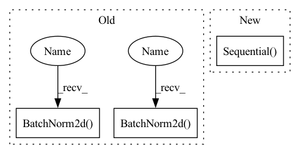

Pattern ID :15369

Before Change
super(DummyEpsModel, self).__init__()
self.conv = nn.Sequential( // with batchnorm
nn.Conv2d(n_channel, 128, 7, padding=3),
nn.BatchNorm2d(128),
nn.ReLU(),
nn.Conv2d(128, 128, 7, padding=3),
nn.BatchNorm2d(128),
nn.ReLU(),
nn.Conv2d(128, 64, 7, padding=3),
nn.BatchNorm2d(64),
nn.ReLU(),
nn.Conv2d(64, 16, 7, padding=3),
nn.BatchNorm2d(16),
nn.ReLU(),
nn.Conv2d(16, n_channel, 3, padding=1),
)
After Change
def __init__(self, n_channel: int) -> None:
super(DummyEpsModel, self).__init__()
self.conv = nn.Sequential( // with batchnorm
blk(n_channel, 64),
blk(64, 128),
blk(128, 256),
blk(256, 512),
blk(512, 256),
blk(256, 128),
blk(128, 64),
nn.Conv2d(64, n_channel, 3, padding=1),
)
def forward(self, x, t) -> torch.Tensor:
// Lets think about using t later
return self.conv(x)
In pattern: SUPERPATTERN
Frequency: 4
Non-data size: 3
Instances
Fragment ID: 52079514
Project Name: cloneofsimo/mindiffusion
Commit Name: fdfff425ddaa29fc6bd02408c1c8c41370cb087f
Time: 2022-04-15
Author: cloneofsimo@gmail.com
File Name: superminddpm.py
M Class Name: DummyEpsModel
N Class Name: DummyEpsModel
M Method Name: __init__(2)
N Method Name: __init__(2)
M Parent Class: nn.Module
N Parent Class: nn.Module
M File Name: superminddpm.py
N File Name: superminddpm.py
M Start Line: 53
M End Line: 67
N Start Line: 63
N End Line: 72
'>
Before Change
nn.BatchNorm2d(128),
nn.ReLU(),
nn.Conv2d(128, 64, 7, padding=3),
nn.BatchNorm2d(64),
nn.ReLU(),
nn.Conv2d(64, 16, 7, padding=3),
nn.BatchNorm2d(16),
nn.ReLU(),
nn.Conv2d(16, n_channel, 3, padding=1),
)
After Change
def __init__(self, n_channel: int) -> None:
super(DummyEpsModel, self).__init__()
self.conv = nn.Sequential( // with batchnorm
blk(n_channel, 64),
blk(64, 128),
blk(128, 256),
blk(256, 512),
blk(512, 256),
blk(256, 128),
blk(128, 64),
nn.Conv2d(64, n_channel, 3, padding=1),
)
def forward(self, x, t) -> torch.Tensor:
// Lets think about using t later
return self.conv(x)
'>
Fragment ID: 52079515
Project Name: cloneofsimo/mindiffusion
Commit Name: fdfff425ddaa29fc6bd02408c1c8c41370cb087f
Time: 2022-04-15
Author: cloneofsimo@gmail.com
File Name: superminddpm.py
M Class Name: DummyEpsModel
N Class Name: DummyEpsModel
M Method Name: __init__(2)
N Method Name: __init__(2)
M Parent Class: nn.Module
N Parent Class: nn.Module
M File Name: superminddpm.py
N File Name: superminddpm.py
M Start Line: 53
M End Line: 67
N Start Line: 63
N End Line: 72
'>
Before Change
stride = 2,
padding=1,
output_padding=1),
nn.BatchNorm2d(hidden_dims[i + 1]),
nn.LeakyReLU())
)
modules.append(nn.Sequential(
nn.ConvTranspose2d(hidden_dims[-1],
hidden_dims[-1],
kernel_size=3,
stride=2,
padding=1,
output_padding=1),
nn.BatchNorm2d(hidden_dims[-1]),
nn.LeakyReLU(),
nn.Conv2d(hidden_dims[-1], out_channels= 3,
kernel_size= 3, padding=1),
After Change
modules.append(nn.LeakyReLU())
modules.append(
nn.Sequential(
nn.Conv2d(in_channels, embedding_dim,
kernel_size=1, stride=1),
nn.LeakyReLU())
)
self.encoder = nn.Sequential(*modules)
'>
Fragment ID: 52079512
Project Name: antixk/pytorch-vae
Commit Name: bb1f447818c4ad08c3fb2f9afd0de163534f81ea
Time: 2020-02-14
Author: anandkrish894@gmail.com
File Name: models/vq_vae.py
M Class Name: VQVAE
N Class Name: VQVAE
M Method Name: __init__(7)
N Method Name: __init__(7)
M Parent Class: BaseVAE
N Parent Class: BaseVAE
M File Name: models/vq_vae.py
N File Name: models/vq_vae.py
M Start Line: 143
M End Line: 214
N Start Line: 88
N End Line: 160
'>
Before Change
self.inv_block = nn.Sequential(
nn.Conv2d(in_channels, in_channels * expand_ratio, 1, 1, 0, bias=False),
nn.BatchNorm2d(in_channels * expand_ratio),
nn.PReLU(),
nn.Conv2d(in_channels * expand_ratio, in_channels * expand_ratio, 3, stride, 1,
groups=in_channels * expand_ratio, bias=False),
nn.BatchNorm2d(in_channels * expand_ratio),
nn.PReLU(),
nn.Conv2d(in_channels * expand_ratio, out_channels, 1, 1, 0, bias=False),
After Change
nn.Conv2d(hidden_dim, oup, 1, 1, 0, bias=False),
nn.BatchNorm2d(oup),
])
self.conv = nn.Sequential(*layers)
def forward(self, x):
if self.use_res_connect:
return x + self.conv(x)
'>
Fragment ID: 52079513
Project Name: opendr-eu/opendr
Commit Name: 18da6a5d3ed5c2a291cb9c600a9fe4e5e17e5671
Time: 2021-01-26
Author: ptosidis@gmail.com
File Name: src/perception/face_recognition/algorithm/backbone/model_mobilenet.py
M Class Name: InvertedResidual
N Class Name: InvertedResidual
M Method Name: __init__(5)
N Method Name: __init__(6)
M Parent Class: nn.Module
N Parent Class: nn.Module
M File Name: src/perception/face_recognition/algorithm/backbone/model_mobilenet.py
N File Name: src/perception/face_recognition/algorithm/backbone/model_mobilenet.py
M Start Line: 111
M End Line: 131
N Start Line: 73
N End Line: 87
'>
Before Change
self.upsampling = nn.Sequential(
nn.Conv2d(64, 256, 3, 1, 1, bias=False),
nn.BatchNorm2d(256),
nn.PixelShuffle(upscale_factor=2),
nn.PReLU(),
nn.Conv2d(64, 256, 3, 1, 1, bias=False),
nn.BatchNorm2d(256),
nn.PixelShuffle(upscale_factor=2),
nn.PReLU()
)
After Change
)
// Third conv layer.
self.conv_block3 = nn.Sequential(
nn.Conv2d(64, 3, (9, 9), (1, 1), (4, 4), bias=True),
nn.Tanh()
)
// Init all layer weights.
self._initialize_weights()
'>
Fragment ID: 52079540
Project Name: lornatang/srgan-pytorch
Commit Name: 77f32e7afa66a51235cf0a974223a2f3da7d6122
Time: 2021-09-01
Author: liuchangyu1111@gmail.com
File Name: model.py
M Class Name: Generator
N Class Name: Generator
M Method Name: __init__(1)
N Method Name: __init__(1)
M Parent Class: nn.Module
N Parent Class: nn.Module
M File Name: model.py
N File Name: model.py
M Start Line: 127
M End Line: 152
N Start Line: 112
N End Line: 142